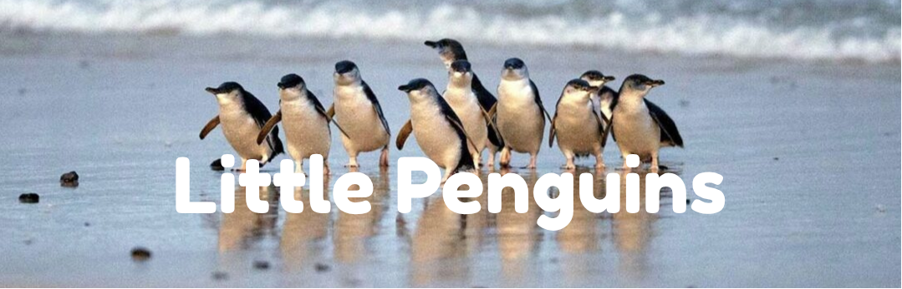

This visualisation explores little penguin tracking and breeding data, showing where penguins travel and how breeding outcomes vary across colonies.
The tracking dataset records little penguin locations across several years, with records concentrated in particular months.
Each penguin was not recorded the same number of times. This chart ranks individual penguins by the number of location records in the tracking dataset.
Each point represents a recorded little penguin location. The tracking records show how movement is concentrated around coastal waters rather than spread evenly across Australia.
The majority of sightings cluster tightly around the Phillip Island and Flinders Island regions — known colonies and foraging grounds. Occasional records extend further along the Victorian and South Australian coastlines, reflecting longer foraging excursions.
This map connects location records for selected penguins, showing that individual movement paths can differ even within the same tracking dataset. Use the checkboxes to show or hide individual penguins.
The Flinders breeding data tracks little penguin colonies over time. This chart compares the number of fledglings recorded across colonies and years. Use the checkboxes to show or hide colonies, and drag the bar chart below to zoom into a year range.
Breeding records can be read as a sequence from eggs to nestlings to fledglings. Comparing these stages helps show that not every egg becomes a surviving fledgling.
This heatmap compares breeding success across colonies and years. Darker cells indicate years where a higher share of recorded eggs became fledglings.
Little penguins depend on nearby marine food sources. This scatterplot compares sea surface temperature with the number of fledglings recorded for each colony-year.
Breeding timing varies between colonies and years. This timeline-style chart shows the recorded start and end of the breeding season for each colony-year.
This chart compares fledgling counts with selected weather conditions. Use the dropdown to switch between wind speed, rainfall, hot days, and sea surface temperature. The chart shows association, not proof of causation.